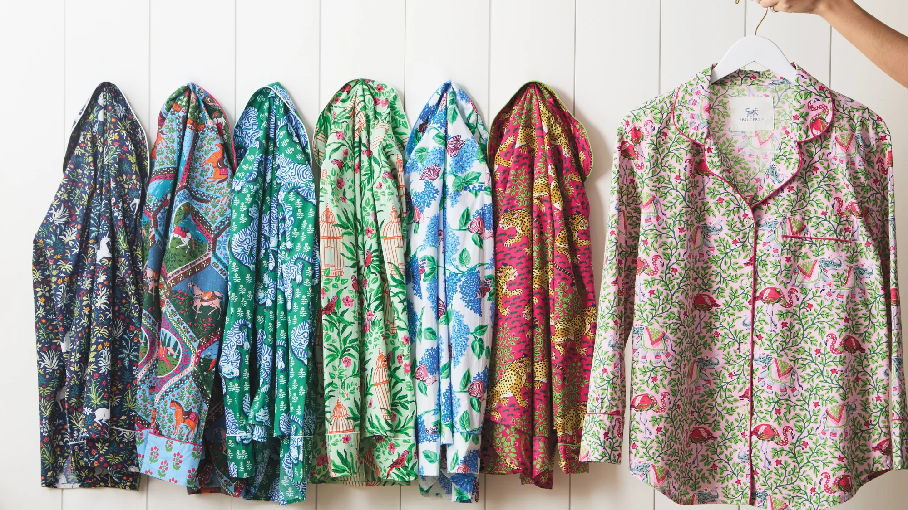

Image:Printfresh
Introduction
With our planet going through massive environmental changes from floods, to earthquakes, to fire, people are starting to think now, more than ever, of how to implement changes in their life that can help make a positive impact on the Earth. These changes may be using more public transportation or walking, conserving energy, buying eco-friendly products, or expecting companies to be more environmentally conscious.
An important part of our everyday lives is getting dressed. Not just practical, fashion and clothes are a means of self expression. The fast-fashion industry is expected to grow to 261,440 million USD in 2029 according to PR Newswire, with a compound annual growth rate of 3.1% from 2023 to 2029. However, the fashion industry has an enormous environmental impact. According to the UN Environment Programme, it generates up to 8% of global carbon emissions, pollutes our oceans with plastic, and around 93 billion cubic meters of water are used in textiles production annually. With a growing global middle class able to buy more clothes and discard them just as easily, it is ever more important to look into how fashion is and can be addressing our world's pressing environmental issue.
This project illuminates the transformative journey of the fashion industry towards sustainability. By scrutinizing the practices of ethical brands against fast fashion, we aim to shed light on the value of conscious consumerism. Through meticulous data collection and analysis, we explore the price differentials, production origins, and the overarching narrative that sustainable fashion is not only a moral choice but can be an accessible one for consumers seeking quality and responsibility in their attire.
Data Collection, Cleaning, and Preprocessing
We collected our data from a range of brands featured on Good On You, an authority on ethical and sustainable fashion. Using text mining methods, we extracted details from each brand's page regarding their sustainable processes. Additionally, we employed statistical methods to gather information regarding product prices and the geographic production locations of these items, which you will see detailed in the subsequent chapters.
Background/Preliminary Research
In the tapestry of today's fashion industry, a vibrant green thread is weaving its way through the market, telling a story of change and hope. This thread represents the sustainable fashion market, a once modest patch in the grand quilt of apparel that has now flourished into a significant presence. Cast your gaze upon the market share pie, and you'll see a bold 42% now claimed by sustainable brands. Traditional titans like Nike, Adidas, and H&M still hold their colors on the chart, but it's the shades of green on the chart to the right that catch the eye, painting a picture of a future where fashion and the environment dance in harmony. Among the sustainable brands, top players include Patagonia, Eileen Fisher and Stella McCartney, etc.
Image: Market Share of Sustainable Brand compared to traditional giants.
Image: Market Share of Top Sustainable Brands.
As we trace the journey back to 2013, the line of progress in revenue share for sustainable apparel is increasing, marked by green points that rise like new growth in spring, up to 6.14% by 2026. Each point is a step, a choice, a story of an industry and its patrons walking together towards a greener horizon.
Image: Sustainable Fashion Brands Revenue Growth.
Common Practices Used in Sustainable Fashion
In general, the constellation of sustainable fashion brands began stitching a greener future with a shared tapestry of values. Their fabrics whispered tales of rebirth, woven from organic whispers of cotton and the second chances of recycled polyester. Ethical threads bound the garments together, ensuring that those who crafted them did so with a committment to fair working conditions. These brands championed a wardrobe revolution, where every piece told a story of enduring quality, not just a seasonal fling. As the green canopy of their market expanded, these eco-savvy sartorialists educated the world, one garment at a time, nurturing a bond between fashion, Earth, and its conscious inhabitants.
Image: Top materials used by sustainable fashion.

Image: Top commitments used by sustainable fashion.
Sources for Sustainable Fashions' Raw Materials
The map below shows that the materials for clothes produced by sustainability brands come from various countries across the globe. In particular, almost a third of sustainable materials are sourced from the United States. Although the countries where materials originate from do not necessarily indicate clothing brands' commitment to sustainability and fair working conditions, it's encouraging that US-based clothing brands are sourcing their materials relatively locally. Besides the United States, other prominently represented countries are India (16.5%), Peru (6.2%), China (4.1%), and Italy (4.1%). According to the United States International Trade Commission, the top 10 textile and apparel imports to the US in 2019 were from countries including China (33.6%) and India (7.0%). The origin of the textiles that go into producing a piece of clothing doesn't tell the whole story about that piece of clothing's social impact, but it can be helpful for informing consumers about where their clothes come from. The supply chain for clothing production can involve several steps, including where raw materials are grown or produced. Although materials sourced from abroad (as seen in the visualization a majority of countries where sustainable clothing brands source textiles from) can be produced using fair and ethical standards, it doesn't negate the fact that in order for those textiles to reach the United States for final production and sale to consumers, they need to first travel from those countries which can contribute to CO2 emissions that are harmful to the environment.

Image: Where do the sustainable materials come from?
Case Study: Price Comparison and Affordability of Sustainable vs. Fast Fashion Brands
Image: Comparing Shirt Prices of Ethical and Fast Fashion Brand.
Image: Simulation-Based Bootsrap Distribution.
From the above boxplot visualizations, we can determine that the median price of a standard shirt and pant item is higher for ethical brands than that of fast fashion brands. The median price for a shirt for fast fashion brands is $17, while it is $50 for ethical fashion brands. For a typical pant item, the median price for a fast fashion brand is $48, while it is $120 for ethical fashion brands. This is to be expected, as fast fashion brands tend to use lower quality, cheaper materials when manufacturing their clothing. What is worth taking away from the visualization is that there are ethical fashion brands that price products at a point that is just as affordable as the median price set for a typical shirt from a fast fashion brand. This is also true for a generic pant item. Therefore, there are ethical brand alternatives that people should look to purchase in an effort to be in possession of good quality clothing that is conducive of sustainable practices, such as reducing waste emissions in the environment.
For shirt items, the true mean price of a shirt item falls within a 95% confidence interval of $31 to $43. However, since these mean value falls within the confidence interval, the data is not significant, as p > 0.05. For pants, this 95% confidence interval increases to $87 to $131. The true mean price of a pant item also falls within the 95% confidence interval, so the data is not significant, with a p > 0.05.
Who do sustainable fashion brands partner with?

Image: Relative Frequency of Partnership Types.
We can see most partners that brands mention on their websites are manufacturing partners which makes sense as manufacturing in the fashion supply chain has the highest environmental impacts and where most improvement can be made. The second most frequent partnerships, sourcing and production, are also part of the supply chain. Finally, there are partnerships with human rights groups, carbon offsetting initiatives, community organizations, and environmental impact partners. We’ll delve more into the characteristics of these partners in the subsequent section.
Why do these brands choose to work with who they do?
Image: Relative Frequency of Partnership Characteristics.
There are a range of characteristics that appear in sustainable brand partners, but they can be grouped into two broad categories: environmental and social impacts. The highest characteristic of these partnerships is that the partner practices sustainable processes. These may include operating within environmental laws and offering safe working conditions. From looking at the characteristics like uplifting women, fair living wages, and human rights, sustainable fashion brands not only care about environmental impact, but social impact as well. They not only have a commitment to the environment, but also to the people who work to bring their products into fruition at all levels of production. Another characteristic to note is that some choose to work with local communities and companies. This behavior may be due to the fact that many of the sustainable brands we webscraped are on a smaller scale than fast fashion brands. But working locally allows brand owners to visit the manufacturing site, for example, to monitor progress and conditions, as well as minimize transportation and its effects. Some brands work with partners that make purposeful impacts in the environment like planting trees with every order or partnering with organizations that work to reduce greenhouse gas emissions.
Image: Printfresh
End Marks
The fashion industry is at a pivotal crossroads, where consumer choices and brand values are converging towards sustainability and ethical production. The data presented underscores not only the cost disparity between fast and ethical fashion but also highlights the presence of affordable, sustainable options that do not compromise on quality or social responsibility. By choosing to support ethical brands, consumers empower a movement that seeks to redefine the industry's standards, prioritizing environmental stewardship and human dignity over fleeting trends and profit margins. However, companies themselves hold the most power and responsibility in making changes to their practices that make an impact on our planet. As we continue to unravel the complex fabric of fashion's impact on our planet, it becomes clear that sustainable fashion is not just a fleeting trend but a necessary evolution, weaving a future where the industry and the environment can coexist in harmony.